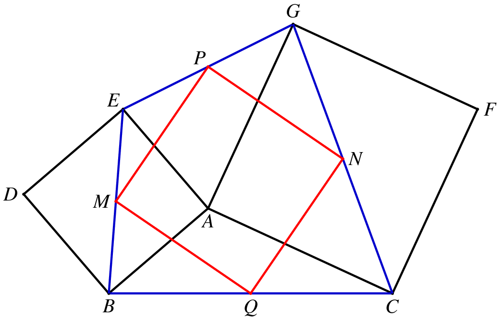

在正方形的题目中，有很常见的一类是和两个正方形有关的图形，如下图：

在这个图形中，有很多有意思的性质，也衍生出了很多的题目．我们讲分几次一一道来．
「手拉手」模型
在学习全等的时候，我们知道有一类很重要的全等模型——旋转全等模型，俗称「手拉手」模型．说的是两个共顶点且顶角相等的等腰三角形，一定伴随着一组旋转全等，如图2：
△ABC 和 △ADE 是两个顶角相等的等腰三角形，易证 △ABD≅△ACE ．这是一个旋转全等，旋转角度等于两个等腰三角形的顶角角度．
关于这个模型，也有很多相关的结论，不过大部分和这次的内容关系不大，有机会我们另开文讲述．
那么，对于两个共顶点的正方形，也有类似的结论．在图1中，我们可以把它看成是两个等腰直角三角形 ABE 和 ACG 的「手拉手」，于是就有 △ABG≅△AEC，而且旋转角度为 90∘．
于是，我们就得到了一个对角线垂直且相等的四边形 BCGE．
和中点四边形相关的问题
熟悉中点四边形的朋友马上就会想到，这样一个四边形的中点四边形一定是一个正方形，也就是下面这个图：

在这个图中，中点四边形 MPNQ 就是一个正方形．
另一个和中点相关的问题
在图1中，如果我们取 EG 的中点 P ，连结 AP ，则 AP⊥BC 且 AP=21BC．（如果取 BC 中点，有类似的结论）
对于中点问题，我们知道一种常见的处理方法就是「倍长中线」，因此我们倍长 AP 至 H，可以证明 △GHA≅△ABC．注意这是一个旋转 90∘ 的全等，因此 AH 和 BC 垂直且相等，所以上面的结论成立．

这个命题逆命题也成立，即如果 AP⊥BC，则 P 为 EG 的中点，且 AP=21BC．
这个命题也可以利用上图来证明，不过这个时候需要直接延长作 AH=BC 来证明全等．
这个时候另外一种处理方法是做垂直，利用弦图的模型来证明全等．
如图7，延长 PA 交 BC 于 Q，作 EM⊥AP 于 M，GN⊥AP 于 N，则 △ABQ≅△EAM，△ACQ≅△GAM，于是 EM=AQ=NG 且 EM∥NG，因此 EMGN 是平行四边形，于是
PEPNBC=PG,=PM,=BQ+QC=AM+AN=2AP
这两个证明同时还都证明了另一个结论，就是 S△ABC=S△AEG．由割补法知这两个三角形的面积的确是相等的．
当然，如果熟悉三角函数的话，这两个三角形的面积相等是显然的．因为 ∠BAC 和 ∠EAG 互补，而角的两边对应相等，因此面积也是相等的．
变形一
前面我们说了 BCGE 是一个对角线垂直且相等的四边形，因此，这个题的可以这样来出：
如图8，在四边形 ABCD 中，AC⊥BD，且 AC=BD，分别取 AD、BC、AB 的中点 M、N、P，分别过 M、N 作 AD、BC 的垂线交于 O，则 PO⊥CD．
这个图如果把 OA、OB、OC、OD 都连起来，显然有 △OAC≅△OBD，注意这是一个旋转 90∘ 的全等，因此 △OAD、△OBC 都是等腰直角三角形．于是这就变成了图5一样的图了，后面的证明和上面相同．
变形二
如果我们把两个正方形中间再加一个小正方形，那么结论会变成什么样子？
如图10，有三个正方形 ABCD、AEFG、FHIJ，取 JD 中点 P，则有 PE⊥BH 且 PE=21BH．

很明显，这个图是上面图5的一个推广，如果中间的小正方形缩成一个点，那么就变成了图5．
既然是推广，那么证明应该也是类似的．我们还是可以倍长 EP 来做，不过这个时候要找的全等变得复杂了一些．
如图11，我们倍长 EP 至 K，可以类似地证明 △JKE≅△GBH．
不过在证明的时候需要注意，这里面隐藏着两个「手拉手」的全等模型，在证明上面的全等的时候需要用到，如图12，有 △ADE≅△ABG，△FJE≅△FGH，都是旋转 90∘ 的全等．

拓展联想
在圆的内接四边形中，有一个类似的结论：
若圆内接四边形的对角线相互垂直，则垂直于一边且过对角线交点的直线将平分对边．
这就是 Brahmagupta 定理，一般译作「婆罗摩笈多定理」，或者「布拉美古塔定理」．
如图13，在圆的内接四边形 ABCD 中，AC⊥BD，过对角线的中点 O 作 PQ⊥AB 点 Q，交 CD 于点 P，则 P 是 CD 的中点．
这个的证明是比较简单的，
∠POC=90∘−∠QOB=∠QBO=∠PCO
于是
∠POD=90∘−∠POC=90∘−∠PCO=∠PDC
故 PC=PO=PD，直接倒角就可以证明了．
这个定理的逆命题也成立，即如果 P 是 CD 的中点，那么 OP⊥AB．证明和上面类似．
总结一下，这类问题主要是和中点有关系，主要的方法是「倍长中线」和「手拉手」的全等．还有一类问题是借助于中位线来解决的，这一类题目讨论的不是 EG 的中点（图2中），而是 DF 的中点．这一类问题，我们放到下一篇文章中来讨论．